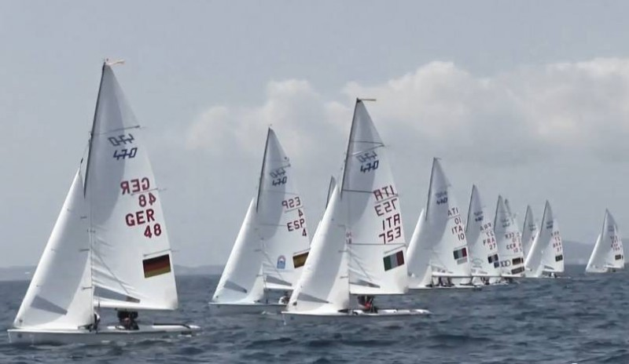
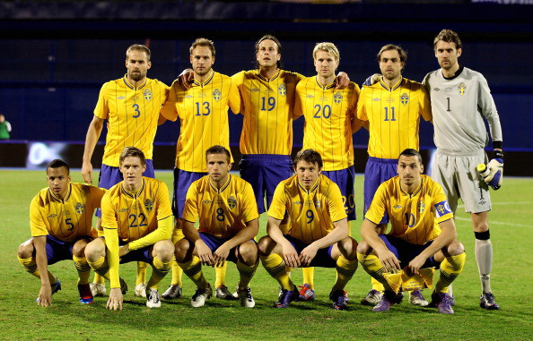
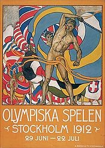

LO SPORT IN DANIMARCA

(di Pietro Bottazzi)
La Danimarca a differenza dei suoi vicini scandinavi non è famosa per
gli sport su ghiaccio, come il pattinaggio e lo sci. In questo Paese
sono molto diffusi la vela e il ciclismo, con la squadra Saxo-Bank che
partecipa alle grandi corse internazionali posizionando si sempre tra
le prime. In inverno, visto il clima rigido, si praticano sport come il
badminton, la pallamano e la ginnastica e, grazie alla nuotatrice Lotte
Friis, è diventato molto popolare anche il nuoto. Non si può poi
dimenticare il calcio, sport diffusissimo in Danimarca a tal punto che
la nazionale ha vinto il campionato europeo del 199. A Copenaghen lo
sport più diffuso è il calcio, come nel resto della nazione: l’FC
Copenaghen è la squadra principale ma non ha mai vinto titoli
internazionali, e vi sono anche altre due squadre minori.
LA SPORT IN SVEZIA

(di Pietro Bottazzi)
In Svezia gli sport hanno una grandissima diffusione. Tra questi
c'è il calcio. L'Allsvenskan, il massimo livello del campionato svedese
di calcio, non è particolarmente amata e seguita all'estero, al
contrario di quanto invece accade in patria. La nazionale svedese di
calcio non ha mai vinto un trofeo, sebbene abbia più volte sfiorato la
vittoria di qualche competizione. Altro sport amatissimo è lo sci, per
i cui praticanti è a disposizione una fitta rete di percorsi e
sentieri. La gara di fondo più famosa si disputa la prima settimana di
marzo ed è la celebre Vasaloppet, che copre la distanza da Sälen a
Mora. La stagione sciistica è particolarmente lunga grazie al clima e
va da novembre ad aprile inoltrato; in anni particolarmente freddi e
nevosi, può durare fino ai primi di giugno. Il più importante centro
sciistico svedese e mondiale è Falun, sede quattro volte dei campionati
mondiali di sci nordico e città ospitante anche per l'edizione 2015.
Sempre relativamente agli sport invernali, gli svedesi praticano il
pattinaggio su ghiaccio su fiumi e canali e, quando capita, anche sul
mar Baltico ghiacciato. Nelle stagioni in cui il clima si fa più mite,
trovano maggiori spazi gli altri sport come il ciclismo: non a caso, le
strade sono spesso affiancate da piste ciclabili (sverigeleden) con
relativa diffusione di punti di noleggio di biciclette, le quali
possono anche essere caricate sui mezzi di trasporto pubblici.
Apprezzata nella bella stagione sono anche l'uso della draisina, e la
pratica del downhill, con cui si scende a gran velocità su quelle che
in inverno sono piste da sci. La Svezia è però un paese ricco di fiumi
e laghi, per cui praticati sono anche il canottaggio e il rafting, in
particolare al centro e al nord del paese. Tali attività sono però
praticabili anche in mare. È possibile praticare liberamente la pesca
sportiva, in particolare nel lago Mälaren (non lontano dalla capitale
Stoccolma), ma anche nel Vänern e nel Vättern. Nelle altre zone invece
potrebbe essere richiesta una licenza, comunque ottenibile presso gli
uffici turistici; in altre la pesca sportiva è proibita. A ogni modo,
essa è ovunque sottoposta a rigide regole volte a tutelare tanto i
pesci quanto l'ambiente. Praticata è anche la pesca invernale,
praticata attraversa un foro nel ghiaccio. In Svezia grazie ai suoi
paesaggi e hai 400 km di percorsi e sentieri è diffuso anche l’
escursionismo. Meno diffusa, ma comunque presente, è anche
l'equitazione. Lo sport che ha comunque portato la Svezia a risultati
eccelsi è il tennis, praticato ovunque grazie ai numerosi campi da
gioco. In Svezia sono nati campioni come Björn Borg e Mats Wilander e
lo Stockholm Open è il principale torneo internazionale. Apprezzato e
praticato anche il golf, praticato soprattutto al sud, mentre al nord è
generalmente limitato all'estate, anche se alcuni campi sono attrezzati
per il golf sulla neve. Infine, va nominata anche la caccia, permessa
ma severamente regolamentata e comunque connessa al piano di tutela
della fauna selvatica, tant'è vero che per alcune specie è proibita. La
stagione di caccia va da agosto a febbraio, e per potervi
prendere parte si deve essere in possesso di una licenza (difficile da
ottenere) e si deve accettare di pagare una tassa annuale. Con il
termine draisina o Draisine viene definito un veicolo ottocentesco,
simile a una bicicletta, con due ruote allineate, di cui l'anteriore
sterzante, ma senza i pedali ed i freni, per cui per la propulsione è
necessario che il guidatore, seduto sul sellino come nelle attuali
biciclette, eserciti una spinta puntando i piedi sul terreno. Sempre
tramite l'uso dei piedi, il guidatore può anche frenare. Il materiale
di costruzione era generalmente legno rinforzato con elementi di ferro.
Esiste anche la draisina ferroviaria, una specie di locomotiva a
quattro ruote in legno. Il Downhill (DH) è una disciplina gravity che
si svolge completamente in discesa lungo piste dai 2 ai 5 chilometri
preparate su pendii anche molto ripidi e con ostacoli naturali o
artificiali, come salti, gradoni alti anche più metri e sezioni
sconnesse di rocce e radici. È una delle discipline che rientrano
nell'ambito gravity, facendo affidamento alla forza di gravità per la
propulsione. A Ystad è molto diffusa la pallamano come il ping pong e
l’ equitazione nei mesi più miti oltre che il calcio rappresentato
dalle squadre dell’ Ystad IF e IFK Ystad. Sono presenti pure campi da
golf e rafting ma sono praticati come hobby o come un’ avventura da
praticare e non come sport agonistici.
Le
Olimpiadi del 1912

(di Pietro Bottazzi)
La quinta edizione delle Olimpiadi estive del 1912 si tennero a
Stoccolma grazie all’intervento grazie al padre e generale della marina
svedese Viktor Gustaf Balck e qualche fortunata coincidenza come
la rinuncia di Roma dell’ edizione del 1908 e all’ indecisione di
Londra che fecero slittare tutto a 4 anni dopo.
La durata di queste Olimpiadi fu dal 5 Maggio al 22 Luglio del 1912, ma
la candidatura informale di Stoccolma è datata 1905. In queste edizioni
delle Olimpiadi il presidente del neonato C.I.O., il comitato Olimpico
Internazionale, de Coubertin introdusse il biathlon e il penthatlon
moderni.
Un’ altra importante e fondamentale innovazione fu il cronometraggio
elettronico per aiutare i giudici a definire meglio l’ ordine di arrivo
degli atleti in caso di distanze impercettibili ad occhio nudo tra i
gareggianti arrivati al traguardo. In questa edizione la Svezia
si classificò seconda nel medagliere dietro solo agli U.S.A.